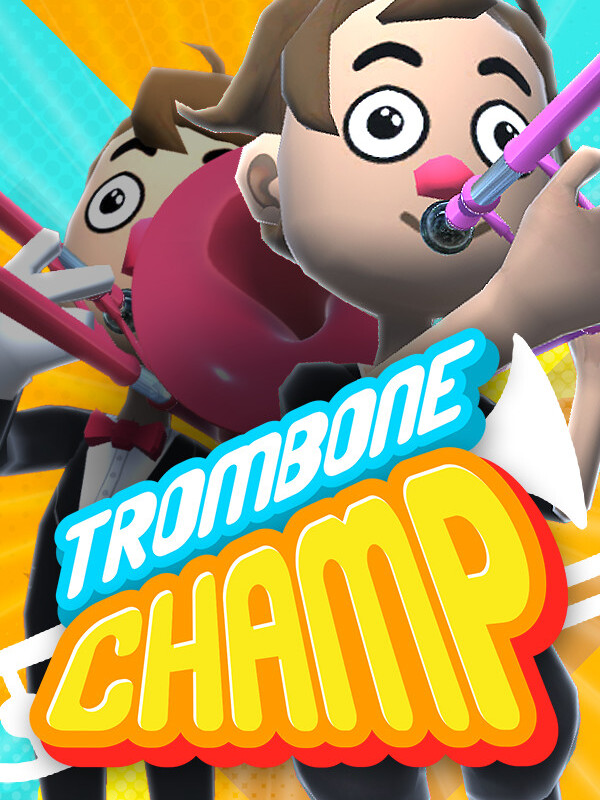

Trombone Champ
Trombone Champ
Details
|  | |
| Playtime | Not Played |
| Last Activity | Never |
| Added | 16/09/2024 15:31:47 |
| Modified | 18/05/2025 0:10:45 |
| Completion Status | Not Played |
| Library | Steam |
| Source | Steam |
| Platform | PC (Windows) |
| Release Date | 15/09/2022 |
| Community Score | 75 |
| Critic Score | 82 |
| User Score | |
| Genre | Indie Music |
| Developer | Holy Wow Studios |
| Publisher | Holy Wow Studios |
| Feature | Multiplayer Single Player |
| Links | Steam Official Twitch |
| Tag | 3D Cartoon Casual Colorful Comedy Cute Difficult Experimental Family Friendly Funny Horror Indie Memes Moddable Music Parody Rhythm Satire Singleplayer Souls-like |
Description
Trombone Champ is the world's first trombone-based rhythm music game. Unlike most music games, you can freely play any note at any time. You're not just following along with the music, you're actually playing the music!

Trombone Champ features over 50 tracks, which include anthems, marches, classical pieces, electronica, folk classics, and more. The game also includes tracks from exciting guest artists. Each track has a unique animated background that moves with the music!
Use the "Toots" you earn from playing songs to purchase sacks of Tromboner Cards. These cards can be used to unlock new tromboners, new trombone colors, and other mysteries!
Using a mouse, move your arm forward and back (as if you were holding a trombone slide), and the pitch of the note will slide up and down to match! Click or use the keyboard to blow! The sounds your trombone makes are completely controlled by you. The closer you are to the music track, the more points you will earn, but you have the freedom to play anything you want at any time!
Nearly every screen in the game, beginning with the main menu, features one or more baboons. You won't believe how many baboons there are in this game! As you discover the secrets of the Trombiverse, their purpose may become clear... but only a true Trombone Champ will uncover their full meaning.
- Toot your way through over 60 tracks. The better you play, the more toots you earn!
- Collect all 50 Tromboner Cards!
- Baboons on nearly every screen!
- Improvise and play whatever you want in Freeplay Mode!
- Uncover the secrets of the Trombiverse and become the True Trombone Champ!
- Absolutely zero microtransactions!
- Appropriate for all ages!
Music
Trombone Champ features over 50 tracks, which include anthems, marches, classical pieces, electronica, folk classics, and more. The game also includes tracks from exciting guest artists. Each track has a unique animated background that moves with the music!
Tromboner Cards
Use the "Toots" you earn from playing songs to purchase sacks of Tromboner Cards. These cards can be used to unlock new tromboners, new trombone colors, and other mysteries!
Controls
Using a mouse, move your arm forward and back (as if you were holding a trombone slide), and the pitch of the note will slide up and down to match! Click or use the keyboard to blow! The sounds your trombone makes are completely controlled by you. The closer you are to the music track, the more points you will earn, but you have the freedom to play anything you want at any time!
Baboons
Nearly every screen in the game, beginning with the main menu, features one or more baboons. You won't believe how many baboons there are in this game! As you discover the secrets of the Trombiverse, their purpose may become clear... but only a true Trombone Champ will uncover their full meaning.